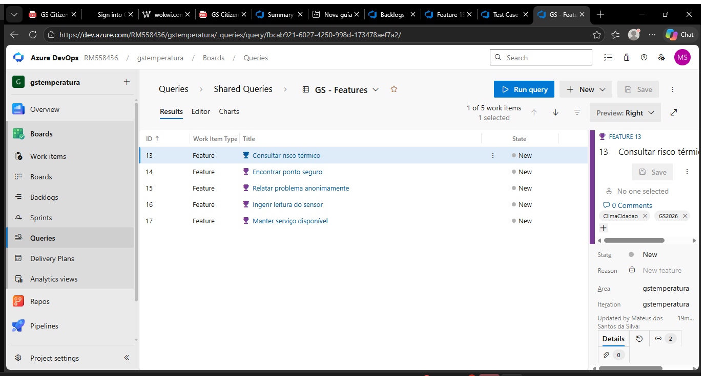
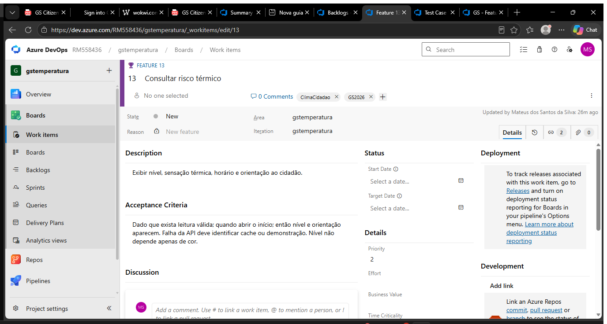
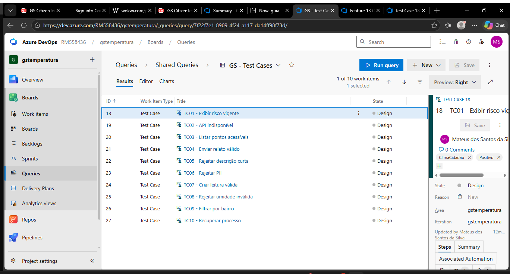
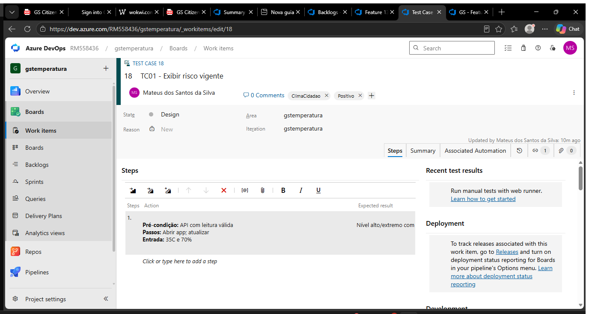

Equipe: Mateus Santos da Silva (RM 558436), Nickolas Moreno Cardoso (RM 557132), André Giovane de Maria (RM 556384).
Azure Boards: https://dev.azure.com/RM558436/gstemperatura
Homologação das jornadas de risco térmico, pontos seguros, relato anônimo, sensor e resiliência operacional.
As cinco Features e critérios de aceite estão documentados em features.md e cadastrados no Azure Boards com os IDs 13 a 17.


Os dez casos de caixa-preta, positivos e negativos, estão documentados em test_cases.csv e cadastrados com os IDs 18 a 27. Todos possuem passos, entradas, resultados esperados e relação Tested By com a Feature correspondente.


| Feature no Azure | Casos relacionados |
|---|---|
| #13 — Consultar risco térmico | #18–#19 |
| #14 — Encontrar ponto seguro | #20 |
| #15 — Relatar problema anonimamente | #21–#23 |
| #16 — Ingerir leitura do sensor | #24–#26 |
| #17 — Manter serviço disponível | #27 |
A estrutura de homologação foi cadastrada no Azure Boards: cinco Features, dez Test Cases e rastreabilidade entre requisitos e testes. Na validação local, a API compilou, quatro testes xUnit passaram e os fluxos de saúde, leitura válida e inválida, filtro por bairro, relato anônimo, bloqueio de PII, pontos acessíveis, risco e Swagger foram aprovados. A homologação final depende das evidências visuais do aplicativo e do teste de recuperação na VM Ubuntu.